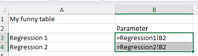

This document describes a relatively straightforward way to create complex tables from standard regression output. While the example here could presumably be consructed using standard R tools, it simply serves to illustrate the principle.
The included file regression_results.xlsx has a tab called “My funny table”, which references the content of the two other tabs:

My funny table
The content of the two tabs Regression1 and Regression2 will be filled with the output from the two regressions run in this document. I have explicitly not set a seed, so that the values change very time you run the file. You can verify that the “funny table” is automatically updated with the latest results.
Setup
Load required packages and set up environment. The package openxlsx is used in preference to writexl because we explicitly want to preserve the contens of any existing (formatted!) Excel file.
library(tidyverse)
── Attaching core tidyverse packages ──────────────────────── tidyverse 2.0.0 ──
✔ dplyr 1.1.4 ✔ readr 2.1.5
✔ forcats 1.0.0 ✔ stringr 1.5.1
✔ ggplot2 3.5.1 ✔ tibble 3.2.1
✔ lubridate 1.9.4 ✔ tidyr 1.3.1
✔ purrr 1.0.2
── Conflicts ────────────────────────────────────────── tidyverse_conflicts() ──
✖ dplyr::filter() masks stats::filter()
✖ dplyr::lag() masks stats::lag()
ℹ Use the conflicted package (<http://conflicted.r-lib.org/>) to force all conflicts to become errors
library(openxlsx)library(broom)
Data Generation
Create sample datasets for the regression analyses.
# Create sample data for first regressionset.seed(123)data1 <-tibble(x1 =rnorm(100),x2 =rnorm(100),y1 =2*x1 +0.5*x2 +rnorm(100))# Create sample data for second regressiondata2 <-tibble(z1 =rnorm(100),z2 =rnorm(100),z3 =rnorm(100),y2 =1.5*z1 -0.8*z2 +0.3*z3 +rnorm(100))
Analysis
Perform regression analyses on both datasets.
# Run regressionsreg1 <-lm(y1 ~ x1 + x2, data = data1)reg2 <-lm(y2 ~ z1 + z2 + z3, data = data2)# Convert regression results to tidy formatreg1_results <-tidy(reg1)reg2_results <-tidy(reg2)
Save Results
Depending on what you want to do, you could simply post-process the existing tables, creating a simple dataset that is printed. Here, we save the individual results as datasets. If you were to split this document into three parts – Data generation, Analysis, and Tables – then this would be the last part of your analysis part.
# Save regression results as RDS filessaveRDS(reg1_results, "regression1_results.rds")saveRDS(reg2_results, "regression2_results.rds")
Tables
Formatting Results via Excel
Here, however, we want to simulate what might be a far more complex table.
# Read data back in, as if we were a separate programreg1_results <-readRDS("regression1_results.rds")reg2_results <-readRDS("regression2_results.rds")
I use a function here, in order to handle the case when a file exists, and when one doesn’t. The very first time you would use this, no Excel file exists, but subsequent runs would overwrite the tabs within the existing file.
# Function to write to Excel, creating file if it doesn't existwrite_to_excel <-function(results_list, filename) {# Check if file existsif (!file.exists(filename)) {# Create new workbook if file doesn't existmessage("Creating new file") wb <-createWorkbook() } else {# Load existing workbook if file existsmessage("Re-using existing file") wb <-loadWorkbook(filename) }# Loop through the results list and write/overwrite sheetsfor (sheet_name innames(results_list)) {# Remove sheet if it already existsif (sheet_name %in%names(wb)) {removeWorksheet(wb, sheet_name) }# Add new worksheetaddWorksheet(wb, sheet_name)# Write data to worksheetwriteData(wb, sheet_name, results_list[[sheet_name]]) }# Save workbooksaveWorkbook(wb, filename, overwrite =TRUE)}# Create list of resultsregression_results <-list("Regression1"= reg1_results,"Regression2"= reg2_results)# Write to Excel filewrite_to_excel(regression_results, "regression_results.xlsx")
Re-using existing file
Display Results Here
Show the regression results in the document.
# Display results from first regressioncat("Results from Regression 1:\n")
Results from Regression 1:
knitr::kable(reg1_results)
term
estimate
std.error
statistic
p.value
(Intercept)
0.1350654
0.0961401
1.404882
0.1632508
x1
1.8668285
0.1048695
17.801445
0.0000000
x2
0.5238113
0.0989947
5.291307
0.0000008
cat("\nResults from Regression 2:\n")
Results from Regression 2:
knitr::kable(reg2_results)
term
estimate
std.error
statistic
p.value
(Intercept)
-0.1563012
0.1048648
-1.490501
0.1393709
z1
1.4305458
0.1009734
14.167548
0.0000000
z2
-0.7925999
0.1079181
-7.344456
0.0000000
z3
0.2206171
0.1141786
1.932210
0.0562816
Directory Contents
Show files created in the working directory.
# List all files in current working directorylist.files(pattern ="(xlsx|rds)$")
# Get current file namecurrent_file <- knitr::current_input()if (!is.null(current_file)) {# when Quarto renders, it creates intermediate files qmd_file <-gsub("\\.rmarkdown$", ".qmd", current_file) my_output_file <- here::here(gsub("\\.qmd$", ".R", qmd_file))# Extract R code to a separate script filesystem2("quarto", args =c("convert", current_file, "--output", my_output_file))if ( file.exists(my_output_file)) {message(paste0("This file (",current_file,") has been converted to ",my_output_file,".")) }} else {message("Code extraction only works when rendering the document, not in interactive mode.")}
This file (README.rmarkdown) has been converted to C:/Users/lv39/Documents/GitHub/writing-r-to-excel/README.R.